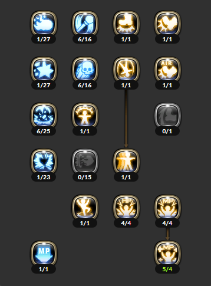
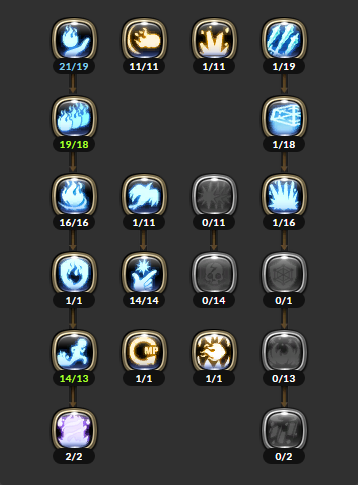
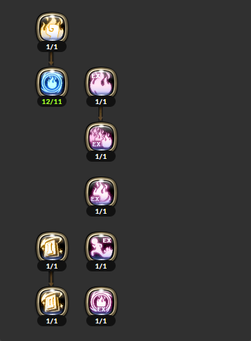

Dragon Nest Pyromancer Guide 90 Indonesia
Intro
Saleana alias Pyromancer adalah job yang memiliki tugas sebagai Damage Dealer, ataupun Killer.
Disebut sebagai Killer karena potensi damagenya yang luar biasa. Oleh karenanya, player Pyromancer bertannggung jawab terhadap equipmentnya agar bisa menghasilkan damage sebesar-besarnya.
Guide ini akan membahas semua skill Sorceress > Elemental Lord > Pyromancer
Kelebihan dan Kekurangan
Kelebihan :
- Elemen api, mendapatkan benefit dari stats Fire Attack.
- Board damage besar.
- Hellfire meningkatkan damage skill api secara keseluruhan, sebanyak 30%.
- Burning Hand (pasif pyromancer) turut meningkatkan damage skill api secara keseluruhan, sebanyak 50%.
- Memiliki shield yang dapat mengurangi damage yang diterima hingga 35%.
- Burn Damage memberikan efek damage-over-time.
- Memiliki skill yang mengurangi fire resist. Bisa di stack dengan beberapa skill -fire resist milik job lain (contoh : Blade Runner EX Ripper).
- Banyak skill memiliki area-of-effect yang luas dan jarak cukup jauh, sangat mudah menghabiskan gerombolan monster sekaligus.
Kekurangan :
- Hampir semua skillnya memiliki waktu casting yang lama.
- Kurang lincah, mobilitas hanya mengandalkan 2 skill.
- Burning Hand sifatnya random, 20% chance untuk aktif, +30% ditambah heraldry hingga total 50%. Bila dihitung rata-rata, hanya meningkatkan 25% damage (50/100 * 50).
- Burn Damage tidak berasa di PvE, hanya sakit di PvP.
- Shield sifatnya buff, dan tidak permanen (cooldown 30 detik, durasi 20 detik).
Skill Build
Skill build ini tidak bersifat mutlak dan selebihnya bisa disesuaikan sendiri.
- 
- 
- 
Sorceress
-
Glacial Spike SA : 100
SA Break : 50
Efek : Light Impact / Slow - Skill es basic sorceress, next-to-useless karena efek freeze sudah di remove. Gantinya, ada efek slow yang hanya berguna di PvP.
- Proyektil esnya berjalan pelan, musuh bisa kena lebih dari 1 kali, terutama boss yang badannya besar.
- Skill ini tidak bisa menembus tembok.
- bisa diarahkan ke atas atau ke bawah.
Analysis PvE - tidak berguna. Karena tidak mendapat benefit dari hellfire & burning hand.
- selain itu efek freeze sudah tidak ada lagi. Slow tidak memiliki efek untuk boss.
PvP - damage tidak seberapa, tapi efek slownya sangat berguna.
- proyektil es berjalan cukup lambat, skill ini mudah dihindari.
- cocok digunakan di tempat sempit, seperti jembatan di Valley Mist, pintu di Lost Temple, dsb.
-
Fire Burst SA : 100
SA Break : (no data)
Efek : Light Impact - Skill api basic sorceress, fungsinya cukup untuk ngebakar musuh supaya skill api berikutnya dapat
benefit dari Hellfire, damage tidak begitu besar, bisa juga untuk di combo ke ignite.
- apinya merambat di tanah.
- bisa ditembak menyebar, caranya ketika cast, langsung arahkan ke samping kiri atau kanan.
- bisa sedikit mendorong musuh atau objek.
Analysis PvE - berguna untuk memberikan efek burn saja.
PvP - murni sebagai filler combo, ataupun untuk mendorong.
-
Toxic Spray SA : 100
SA Break : 20/hit
Efek : Light Impact - Skill dark basic sorceress, fungsinya? untuk buka jasa combo 999 XD. di level 6 racunnya ada 3 proyektil.
- punya efek 'balistik', artinya kalau diarahkan ke atas, maka racunnya akan 'meloncat' jauh.
- Titik racunnya bisa diatur agar jatuh di 1 titik, namun sulit dipraktekkan.
- racunnya bisa menempel ditembok, atau dibawah jembatan, musuh yang lewat di atas jembatan akan kena racunnya.
Analysis PvE - hampir tidak berguna, karena damage yang kecil.
- efektif untuk mengejar achievement combo xxx.
PvP - Di level 6 racunnya semakin "lengket".
- Sangat berguna untuk mengunci musuh yang terjatuh di PvP, terutama untuk yang tidak punya power tumble atau sedang cooldown, dijamin sulit lolos.
- Untuk menciptakan 'ranjau racun', yang menginjak racunnya akan paralyzed untuk sepersekian detik.
- Efektif melawan cleric yang sedang mengaktifkan Block.
-
Wheeling Staff SA : (no data)
SA Break : 75/hit (lvl 6)
Efek : Stagger - Salah satu dari beberapa skill sorceress yang atributnya physical. di Level 6 bisa mengeluarkan mini tornado ke depan.
- bisa mengenai musuh yang sedang jatuh.
- bisa mendorong objek.
Analysis PvE - sangat berguna untuk mendorong objek, mini tornado mendorong objek semakin jauh.
PvP - mini tornado efeknya "stagger", artinya satu kali hit dari normal attack biasa akan menjatuhkan musuh.
-
Void Blast SA : 200
SA Break : 200 (lvl 6)
Efek : Light Impact - Skill yang AoE nya jauh didepan, gunakan untuk menyerang target yang jauh. Di lvl 6 ada tambahan residu void dan bisa
terus mengenai musuh.
- bisa menembus tembok, void blast akan muncul di jauh didepan.
Analysis PvE - damage lumayan, dengan cooldown yang tidak terlalu lama, filler combo saja.
PvP - gunakan untuk menyerang musuh yang jauh, seperti priest di balik tumpukan relicnya.
-
Shock Wave SA : 400
SA Break : 1200
Efek : Knockback - Skill dengan AoE kecil di sekitar badan, gunakan ini untuk menjauhkan musuh yang ada di sekeliling.
Penting untuk pertahanan diri di PvP.
- SA Break besar.
- bisa membatalkan skill musuh yang SA nya lumayan besar dan berbahaya, semacam Justice Crash, Electric Smite, Eagle Dive, dll.
Analysis PvE - berguna untuk mendorong objek.
PvP - untuk pertahanan, menjauhkan musuh.
- bisa untuk menggagalkan skill musuh.
-
Mana Flow - Skill buff untuk diri sendiri dan party. mengurangi konsumsi mp sebesar 20% dalam penggunaan skill.
Serta mengurangi cooldown seluruh skill sebesar 10%.
- Buff untuk diri sendiri secara akan diterima tepat ketika casting skill, untuk party/teman, seluruh animasi harus berjalan (angkat tongkat, ada efek aura).
-
Rising Blast
SA Break : 800
Efek : Lift - Skill untuk bangun ketika jatuh.
- salah satu skill pertahanan diri ketika terjatuh.
- Invincibility frame di sepanjang animasi bangun.
- ada "recovery frame" tepat selesai blast, recovery frame ini dimana karakter diam sejenak, tapi tidak invincible, artinya kita bisa diserang ketika recovery frame ini.
-
Blink - Skill untuk pertahanan diri, untuk menghindar atau mendekat musuh.
- invincibility frame hanya ketika kita 'menghilang' selama 0.3 detik.
Analysis PvE - bisa digunakan untuk menghindari stomp.
PvP - satu-satunya skill menghindar, mendekat, atau membuka serangan. Lebih vital untuk pertahanan diri.
-
Power Blink - Skill blink yang digunakan ketika dalam kondisi terkena hit / paralyzed, tapi tidak dalam kondisi stun.
- bisa juga digunakan ketika jatuh / ter knockout dari udara ke tanah, tepat ketika menyentuh tanah kita bisa memakai ini.
Analysis PvE - skill ini cukup berguna ketika nest karena banyak boss yang memiliki combo maut.
PvP - vital untuk pertahanan, ketika paralyzed.
- tidak bisa digunakan ketika stunned.
- bisa menghindari combo Doom Blade + Dark Crash milik Avenger, ketika terjatuh menyentuh tanah, langsung power blink.
-
Aerial Evasion -
Salah satu skill pertahanan diri untuk 'kembali berdiri' ketika kita terjatuh saat melayang, atau diangkat oleh musuh.
- Sebaiknya gunakan skill ini ketika kita di'angkat' keatas dalam posisi terbang paling tinggi, jangan ketika kita mulai turun ketanah.
- ada invincibility frame tepat ketika animasi 'berdiri' di udara.
Analysis PvE - jarang musuh yang bisa membuat terpental, seperti stomp.
PvP - sangat penting untuk dapat kembali berdiri ketika knocked down saat di udara.
-
Stiletto Dance - Skill untuk 'menginjak-injak' musuh yang jatuh ke tanah. Posisi kita harus berada tepat di atas target kalau mau menggunakan skill ini.
-
Witch Slap - Kalau job lain klik kanannya adalah kick, untuk sorceress, klik kanan normalnya adalah ini. Tergantung dari secondary weapon yang dipakai, efeknya berbeda :
- Spellbook : sama seperti tanpa secondary weapon, tampar musuh dengan tangan kiri, tapi kali ini dengan buku.
- Crystal Ball : bola kristal akan mengelilingi badan, mengenai musuh di sekitar.
- Voodoo Doll : akan keluar boneka yang menampar jauh di depan.
Analysis PvE - bisa digunakan untuk mendorong objek.
PvP - untuk 'menampar' musuh, namun SA break kecil, player berpengalaman bisa wall loop combo dengan ini.
-
Air Strike - skill untuk memukul musuh dengan tongkat sambil melompat, efek knockdown.
Analysis PvE - bisa untuk memukul objek, atau mendorongnya, selebihnya hampir tidak berguna.
PvP - bisa memukul jatuh musuh yang di udara, ketika baru bangkit dari Aerial Evasion misalnya.
- bisa juga memukul jatuh yang sedang berdiri.
-
Knee Jerk - skill ini hanya bisa digunakan pada musuh yang ke stun / pusing. Hampir tidak berguna, karena sorceress bukan stunner.
-
Charged Missile - Mengambil skill ini akan menambah fungsi charge pada normal attack, tahan klik kiri untuk charge. efek yang dihasilkan adalah stagger.
Elemental Lord
-
Fireball (EX) - skill nuke utama pyromancer, damage max setelah dicas selama 1,3 detik.
damage maksimal. Klik kanan untuk memecah fireball menjadi 3 proyektil (EX only).
- Damage masing-masing dari fireball pecah 3 adalah 96% dari board damage.
- Sedangkan damage maksimum dari single fireball adalah 200% alias 2x lipat dari board damage.
- damage yang diterima selama casting Fireball akan berkurang, juga tersedia opsi damage reduction dari heraldry Fireball.
- skill ini punya efek balistik, arahkan ke atas untuk menjangkau target yang jauh.
- untuk dapat mengenai target yang jauh, diharuskan mengenai tanah tempat target berpijak.
karena adanya 'keanehan' di DN, proyektil Fireball akan menembus badan musuh. Tapi keanehan ini tidak terjadi di jarak dekat. . - meninggalkan residu ledakan selama kurang lebih 1 detik, musuh yang melewati residu ini akan terkena damage.
- Fireball EX yang terpecah 3 masing-masing memiliki chance untuk trigger burning hand.
- harus berada dalam jarak point-blank agar 3 proyektil Fireball EX dapat mengenai target.
- ketika menembakkan Fireball non-ex, 'bola api'nya tidak terlihat, tapi untuk EX, akan terlihat.
Analysis PvE - bisa digunakan untuk menjangkau target yang jauh dan posisi yang aman dari jangkauan serangan boss. Bila boss dalam jarak dekat, usahakan untuk menembak dengan klik kanan (pecah 3) agar damage maksimal.
PvP - bisa diarahkan ke tembok, atau bawah jembatan, musuh yang ada di atas jembatan akan terkena, contoh di jembatan Circular Arena, Lost Temple.
- casting time cukup lama, pastikan berada pada jarak aman dari jangkauan musuh.
-
Inferno EX - Menyemburkan api sejauh 7m kedepan selama 3 detik. Damage besar. Klik kiri untuk mengakhiri semburan
dengan sebuah ledakan dan memberikan debuff -20% critical resist (EX only).
- selama menyemburkan api, bisa diarahkan ke kiri dan kanan untuk membelokkan arah semburan.
- bisa menembus tembok.
- tidak bisa diarahkan ke atas maupun ke bawah, tapi mengenai musuh yang knockdown.
- sedikit mendorong musuh ke belakang.
- Skill ini memiliki banyak hit selama semburan, semakin banyak hit akan semakin sering memicu Burning Hand untuk keluar.
Analysis PvE - Debuff -20% critical resistance selama 10 detik.
- Casting time cukup lama dan pastikan terkena full hit agar damage maksimal, segera ledakkan (klik kiri) ketika merasa musuh akan berjalan keluar dari jangkauan, terutama boss.
PvP - Super Armor yang cukup besar dan range yang cukup panjang, bisa menyerang dari jarak agak jauh.
- Musuh masih bisa melarikan diri dengan power tumble, namun bisa terkena semburannya kembali.
- Ledakan Inferno EX bisa membuat musuh sempoyongan/stagger.
-
Fire Wall EX - Mengeluarkan 'tembok' api di sekeliling badan, klik kiri untuk dapat mengeluarkan tambahan semburan api kedepan (EX only), bila tidak hanya menjadi Fire Wall biasa.
- Memiliki Super Armor terbesar kedua setelah ultimate, jadi tidak mudah untuk membatalkan skill ini.
- SA Break juga besar, dapat mengangkat musuh.
- untuk mencapai damage maksimal, target harus berada di tanah, lalu terbawa terbang agar terkena seluruh tembok apinya.
- animasi ketika mengeluarkan tembok api dapat dicancel langsung ke EX, caranya klik kiri ketika casting.
- semburan api EX nya dapat diarahkan ke kiri atau kanan.
- Animasi casting skill ini sama dengan Ice Cold Field.
Analysis PvE - Damage cukup besar, berguna menghabisi gerombolan monster yang mengerubungi.
- Karena AoE-nya sekitar badan, harap berhati-hati ketika ingin menggunakannya pada Boss.
PvP - Super Armor besar, Damage lumayan, sulit untuk membatalkan skill ini.
- Casting time cukup lama, musuh masih bisa melarikan diri.
- Sangat efektif ketika berada di tengah-tengah gerombolan musuh.
-
Fire Shield - "Tameng" milik Elemental Lord, fungsinya untuk meningkatkan Super Armor sebesar 10x lipat untuk PvE, 1,5x lipat
untuk PvP, juga mengurangi damage yang diterima selama shield ini aktif.
- ada jeda sekitar 1 detik sampai shield aktif.
- mengeluarkan efek semburan api yang tidak terlihat, yang menyebabkan musuh disekitar akan menerima efek burn. AoE nya kurang lebih seperti Ignite.
- Cooldown 30 detik, durasi 20 detik.
Analysis PvE - efektif mengurangi damage yang diterima.
- Meskipun Super Armor meningkat dengan tajam, beberapa stomp masih bisa menembus Super Armor.
- sangat cocok di combo dengan ignite.
PvP - Sehubungan dengan perubahan skill ini menjadi self-buff dan tidak lagi toggle dimana sebelumnya user bisa mengaktifkan dan mematikannya kapan saja. Maka penggunaannya juga harus lebih diperhatikan.
- Gunakan ketika ingin menyerang, atau bertahan ketika musuh mendekat.
-
Hot Rod EX - Naik keatas tongkat, lalu meluncur kedepan sambil menyemburkan 'knalpot' api ke belakang selama kurang
lebih 3 detik. Hot Rod EX memiliki efek tambahan ledakan dan menghilangkan hit limit 50%.
- selama casting, skill ini bisa di cancel dengan blink.
Analysis PvE - Rentan terhadap serangan boss, terutama STOMP. Beruntung di update sebelumnya bisa membatalkan dengan blink, namun tetap saja potensi damage Hot Rod jadi terbuang.
- Update terbaru mengurangi cooldown di PvE menjadi 25 detik. Tentu Damage per Cooldown skill ini jadi jauh meningkat, dan bisa lebih sering digunakan.
- Ada efek damage reduction ketika casting skill ini (PvE only).
PvP - Full hit damage skill ini lumayan untuk satu target, untuk group vs group, gunakan untuk masuk ke tengah musuh dan mengacak formasi, maupun untuk kabur.
-
Volcanic Vortex -
Ultimate api, mengeluarkan lingkaran api besar di depan yang menjulang ke udara. musuh yang berada
di udara maupun tanah akan ter"panggang", diakhiri dengan ledakan.
- ada jeda sekitar 1 detik sampai lingkaran api / vortex keluar, dan selama jeda itu kita bisa membelokkan ke kiri atau kanan untuk menentukan area vortex.
- ledakan terakhir dapat dibelokkan ke kiri atau kanan, timingnya ketika vortex akan selesai, langsung belokkan.
- skill ini dapat di cancel di tengah casting dengan blink.
- ada efek damage reduction -70% ketika skill berlangsung.
Analysis PvE - Damage lumayan, tapi tetap waspada terhadap musuh yang gerakannya lincah, karena bisa saja keluar dari area Vortex.
PvP - Sangat efektif, dan karena jarak dan AoE nya cukup jauh didepan, maka bisa digunakan dari posisi aman dalam group PvP.
- Untuk 1v1 apabila musuh berhasil lolos, gunakan trik membelokkan ledakan terakhir bila musuhnya masih berada dalam jangkauan Vortex.
-
Icy Shards -
Skill ini menusukkan pedang es yang muncul dari tanah, lawan yang terkena akan terpental keatas. ada efek slow.
- skill ini bisa diarahkan menyebar ke kiri atau kanan ketika casting.
- ada 3 pedang es yang muncul.
Analysis PvE - berguna untuk menghancurkan objek saja atau filler combo.
PvP - filler combo.
-
Frozen Spikes - Mengeluarkan bongkahan es di depan badan. lawan yang Tersenggol akan terkena slow.
- skill ini muncul di tanah di depan badan, tapi bila kita cast skill ini dari pinggir jembatan misalnya, maka bongkahan esnya akan muncul di bawah.
Analysis PvE - filler combo, atau menghabisi monster-monster kecil.
PvP - berguna untuk menciptakan tembok penghalang untuk melawan musuh tipe melee. maupun "safe zone", meskipun tidak sebesar EXnya, tapi tetap cukup untuk sekedar bertahan.
- bisa juga untuk ngeslow, menutup jalan.
-
Ice Cold Field - mengeluarkan sebidang es jauh di depan badan, ada efek slow.
- ada animasi 'hawa es' di tempat sebelum munculnya ICF.
- esnya muncul jauh di depan caster, sehingga bisa di cast dari balik tembok.
- sangat berguna untuk ngeslow musuh yang sulit dihentikan, semacam Acro Showtime, Mercenary Iron Skin.
- bisa dihindari dengan melompat, namun posisi badan harus di titik tertinggi saat bongkahan ICF muncul.
Analysis PvE - damage di level 1 tidak terlalu besar, dan hampir tidak berguna bagi Pyromancer.
PvP - animasi casting cukup lama, berguna untuk slow saja.
- bisa digunakan dari balik tembok atau tikungan, jembatan.
-
Ice Shield - tameng es, efeknya mirip seperti fire shield.
- kebalikan dari Fire Shield, Ice Shield akan memberikan efek slow.
- mirip seperti Fire shield juga, akan muncul "semburan" es yang tidak terlihat, dan memberikan efek slow.
Analysis PvE - Hampir tidak berguna untuk Pyromancer.
PvP - Efek slow dari Ice Shield sangat berguna untuk pertahanan, karena AoEnya "ledakan"nya di sekitar badan, bisa juga disambung ke skill Shatter.
- Karena AoE nya cukup luas, untuk grup PvP sangat direkomendasikan mengambil Ice Shield.
-
Chilling Mist -
Menyemburkan es ke depan badan, AoE nya berbentuk kerucut melebar. Damage sangat sakit di PvP.
- sesaat setelah casting, skill ini bisa diarahkan ke kiri atau kanan sebelum semburan es keluar.
Analysis PvE - bukan sebagai skill utama Pyromancer, apalagi Ice Shield membutuhkan 10sp.
PvP - skill killer milik Cryomancer, namun bagi Pyromancer cukup untuk ngeslow, atau filler combo. Efektif untuk mode 1v1.
-
Blizzard -
Ultimate es, mengeluarkan badai es di sekeliling badan. Memberikan efek slow bagi musuh yang terkena.
- skill ini tidak bisa di cancel, tidak seperti volcanic vortex.
Analysis PvE - sangat-sangat tidak berguna karena tidak lagi memberikan efek freeze.
- Invincible selama casting (PvE only).
PvP - tidak direkomendasikan untuk diambil, sedikit berguna dalam PvP grup untuk ngeslow banyak musuh sekaligus. Meski begitu Ice Shield masih jauh lebih efektif ketimbang Blizzard.
- cast tepat di tengah-tengah musuh untuk efek maksimal.
-
Flame Spark -
Menembakkan percikan api ke depan.
- skill ini bisa 2 hit, dengan syarat harus dekat dengan target dan arahkan mengenai badannya. Bila tidak mengenai badan maka hanya 1 hit.
- memiliki efek balistik, arahkan ke atas untuk mengenai target jarak jauh.
- bisa mengenai musuh yang ada di atas jembatan seperti di Circular Arena atau Lost Temple.
- bila diarahkan ke tanah, akan menimbulkan efek ledakan kecil.
Analysis PvE - cooldown singkat, damage lumayan. Bila sering menggunakan blink, skill ini cukup efektif dari segi DPS.
PvP - skill ini bisa lebih sakit dari fireball sekalipun (dari segi dps) di level max. bisa digunakan untuk menyicil dari jarak jauh. Tapi membutuhkan skill blink, yang artinya, cukup berbahaya ketika musuh malah mendekat.
-
Icy Gust - Menaburkan es di depan badan selebar 360 derajat. ada efek slow.
Analysis PvE - hampir tidak berguna.
PvP - efek slow untuk mempersulit manuver lawan.
- casting time cukup lama, berbahaya ketika Icy Gust malah miss.
-
Phoenix Strike -
Menembakkan 3 proyektil burung api ke depan. Burung api akan menyebar ke 3 arah sampai jarak tertentu.
- Cast dari jarak point-blank dengan target untuk mencapai damage maksimal pada single target.
- Gunakan skill ini untuk mengurangi cooldown skill Fireball -15 detik (minimal satu burung harus mengenai target).
Analysis PvE - Memberikan efek debuff -20% elemen resistance selama 20 detik dengan cooldown yang sama, pastikan skill ini selalu keluar duluan sebelum mengeluarkan skill api lain.
- Damage tidak lagi sebesar dulu.
PvP - Hampir instant cast.
- Jarak point-blank agar target kena 3 burung sekaligus, dan sangat sakit.
-
Glacial Freeze - Memberikan efek slow di sekitar badan, hampir tidak berguna untuk pyromancer karena tidak lagi memberikan efek freeze.
- ada jeda sekitar 0.5 detik hingga es keluar.
Analysis PvE - sama sekali tidak berguna.
PvP - skill slow dengan area kecil, karena tidak lagi membekukan musuh, skill ini cukup riskan digunakan.
-
Ignite - Me'ledakkan' seluruh musuh di sekitar badan yang sedang dalam status burn. SA break sangat besar. Damage lumayan, dengan cooldown 10 detik di PvE. Spam skill ini di PvE, namun harap diperhatikan karena skill ini juga menghilangkan efek burn.
- AoE nya menjulang hingga keatas, sehingga bisa mengenai musuh yang ada di tempat yang lebih tinggi.
- Efektif di combo-kan dengan Fire Shield.
Analysis PvE - cooldown maksimal 10 detik di level 10, Damage per Cooldown sangat besar, area juga cukup luas.
- efektif untuk menghadapi gerombolan monster yang kecil, Fire Shield sangat sinergi dengan skill ini.
PvP - damage oke, cooldown lama. casting skill cukup lama, banyak waktu untuk menghindar, gunakan di saat-saat yang tidak terduga atau musuh kesulitan menghindar.
-
Shatter - Versi es nya Ignite. Skill ini akan mengenai target yang sedang dalam efek debuff 'frost bite' dan 'frozen / freeze'. Frost bite yakni terkena slow es, sedangkan frozen karena beku.
- AoE mirip seperti Ignite.
Analysis PvE - Tidak berguna untuk Pyromancer.
PvP - memberikan efek slow selama 7 detik setelah target terkena skill ini, cukup untuk combo dengan skill es lain.
- lebih direkomendasikan untuk memaksimalkan skill ignite. Tapi slownya dalam grup PvP cukup menjengkelkan pihak musuh.
-
Mana Surge - Skill pasif, memberikan chance mengembalikan mana/mp yang dikonsumsi ketika menggunakan skill berdasarkan presentase. Berhubung sekarang hanya skill tree job ke 2 dan ke 3 yang menggunakan mana, skill pasif ini jadi tidak terlalu berguna.
Analysis PvE - hampir tidak berguna. Karena hampir di seluruh nest, karaktermu akan di heal secara otomatis hingga full HP/MP ketika selesai melawan boss stage.
PvP - juga hampir tidak berguna, dalam praktiknya, jarang sekali Sorceress kehabisan MP.
-
Hell Fire - Skill pasif, yang sangat berguna di PvE untuk meningkatkan damage skill api hingga 30% DAN meningkatkan critical rate terhadap target yang terkena efek burn.
- ekstra 30% damage sifatnya aditif, akan terlihat angka putih setelah damage utama dari setiap skill api yang dicast ke target.
Analysis PvE - Salah satu sumber kekuatan Pyromancer. Pastikan target terkena burn untuk dapat benefit dari skill ini.
PvP - di PvP efeknya hampir tidak berasa.
Pyromancer
-
Burning Hand - Skill pasif, yang menjadikan seorang Elemental Lord menjadi Pyromancer. memberikan ekstra Fire damage ke target yang sedang dalam efek burn ketika Burning Hand aktif.
- Sifatnya aditif mirip seperti hell fire. Ada tambahan angka damage setelah damage utama.
- Ekstra damage 50% untuk PvE, 70% untuk PvP.
- Burning Hand aktif secara random (20% chance, 50% chance ditambah plate).
Analysis PvE - pastikan target dalam status burned agar Burning Hand dapat keluar.
PvP - Ekstra damage 70% tentunya membuat seluruh skill api menjadi semakin sakit.
-
Rolling Lava EX - Mengeluarkan bola lava dari dalam tanah, dapat dilepas secepatnya dengan klik kiri atau ditahan sebelum digelindingkan kedepan (EX only). Damage luar biasa di PvE dan PvP. Bola lava akan gelinding sampai jarak maksimal sampai meledak, bila menabrak tembok sebelum jarak maksimal, akan meledak.
- Rolling Lava EX memiliki 3 tahapan dalam casting, stage 1 dimana bola ditahan sebelum gelinding, stage 2 ketika bola gelinding, stage 3 ketika bola lava meledak.
- Untuk mencapai damage maksimal, pastikan target berada dalam jangkauan 3 stage, ambil jarak sebelum casting.
- EX dari Rolling Lava sedikit mempercepat casting skill ini dari Rolling Lava non-EX, segera klik kiri ketika casting untuk langsung menggelindingkan bola lava ke depan.
- Rolling Lava dapat gelinding ke atas tangga atau dataran tinggi sekalipun.
Analysis PvE - efektif melawan boss yang berbadan besar.
- selalu perhatikan target sebelum casting skill ini karena sulit digunakan untuk target yang lincah. Selain castingnya cukup lama, pandangan kedepan akan sedikit tertutup oleh bola lava. Dalam kebanyakan kasus, sangat sulit untuk mencapai full hit dari 3 stage Rolling Lava, lebih sering kita melepas langsung bola dan meledak.
PvP - Mudah untuk menghindar dari bola lava yang gelindingnya cukup lelet, maka dari itu pastikan musuh dalam kondisi terjatuh, atau dekat tembok, atau sulit melihatnya. SANGAT efektif dalam mode group PvP.
- Casting dari pinggir jembatan seperti Lost Temple atau Circular Arena, bola lava akan langsung gelinding kebawah, mengagetkan musuh yang berada di bawah.
Kesimpulan
di cap 90, Eyedentity telah merombak board damage seluruh skill api rata-rata mencapai 2x lipat, sehingga damage Pyromancer meningkat besar, namun Burning Hand di nerf cukup dalam, dari 140% menjadi 50%. Setidaknya tertolong dengan damage skill api yang pada dasarnya sudah besar.
Dikarenakan hampir seluruh skillnya memiliki casting time yang lama, dalam mode PvP Pyro tidak bisa terlalu agresif. 1v1 misalnya, butuh sedikit timing dan position yang baik. Untuk group PvP, sebaiknya serahkan urusan "pembuka jalan" pada job lain, tugas Pyro adalah nyampah menghabisi musuh.
Referensi
Super Armor Values (All Class)
apabila ada petanyaan, bisa mengunjungi forum di kaskus mengenai guide ini.